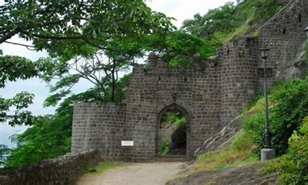

Shivneri Fort
Shivneri Fort is a historic fortification located near Junnar in Pune district, Maharashtra, India. It holds great significance in the history of the Maratha Empire and Chhatrapati Shivaji Maharaj. Here are some key details about Shivneri Fort:
History
- Built By: Shivneri Fort is believed to have been built during the time of the Satavahanas and later renovated by the Bahamani rulers in the 15th century.
- Significance: The fort is known as the birthplace of Shivaji Maharaj, who was born here in 1630. It served as an early seat of the Maratha Empire's administration and military operations.
Architecture
- Design: Shivneri Fort is strategically located atop a hill and features several gates, bastions, and water reservoirs.
- Notable Structures: Key attractions within the fort include the Shivai Devi Temple, where Shivaji Maharaj was born, and the Kadelot Point offering panoramic views of the surrounding landscape.
Location
- Coordinates: 19.2105° N, 73.8780° E
- Elevation: Shivneri Fort is situated at an elevation of approximately 1,035 meters (3,396 feet) above sea level.
- Nearby Attractions: Nearby places of interest include Junnar town known for its ancient caves and temples, such as Lenyadri Caves.
Trekking
- Difficulty Level: The trek to Shivneri Fort is moderate, suitable for beginners and families, with some steep sections near the summit.
- Duration: The trek takes about 1-1.5 hours to reach the fort entrance from the base parking area.
- Best Time to Visit: The best time to visit Shivneri Fort is during the monsoon season (July to September) when the surroundings are lush green, or during winter (November to February) for pleasant weather.
Points of Interest
- Panoramic Views: Enjoy panoramic views of the Junnar town and surrounding hills from various points on the fort.
- Historic Structures: Explore the Shivai Devi Temple and other historic structures that reflect the fort's architectural and cultural significance.
Shivneri Fort holds a special place in Maharashtra's history, not only as the birthplace of Shivaji Maharaj but also as a symbol of Maratha pride and valor.